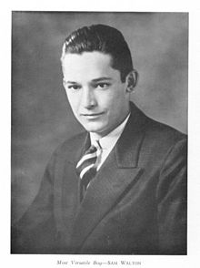

Sam Walton was born to Thomas Gibson Walton and Nancy Lee, in Kingfisher,
Oklahoma. He lived there with his parents on their farm until 1923. However,
farming did not provide enough money to raise a family, and Thomas Walton went
into farm mortgaging. He worked for his brother's Walton Mortgage Company, which
was an agent for Metropolitan Life Insurance where he foreclosed on farms during
the Great Depression.
He and his family (now with another son, James, born in 1921) moved from
Oklahoma. There they moved from one small town to another for several years.
While attending eighth grade in Shelbina, Missouri, Sam became the youngest
Eagle Scout in the state's history.In adult life, Walton became a recipient of
the Distinguished Eagle Scout Award from the Boy Scouts of America.
Eventually the family moved to Columbia, Missouri. Growing up during the Great
Depression, he did chores to help make financial ends meet for his family as was
common at the time. He milked the family cow, bottled the surplus, and drove it
to customers. Afterwards, he would deliver Columbia Daily Tribune newspapers on
a paper route. In addition, he also sold magazine subscriptions. Upon graduating
from David H. Hickman High School in Columbia, he was voted "Most Versatile
Boy."
After high school, Walton decided to attend college, hoping to find a better way
to help support his family. He attended the University of Missouri as an ROTC
cadet. During this time, he worked various odd jobs, including waiting tables in
exchange for meals.
Also during his time in college, Walton joined the Zeta Phi
chapter of Beta Theta Pi fraternity. He was also tapped by QEBH, the well-known
secret society on campus honoring the top senior men, and the national military
honor society Scabbard and Blade. Additionally, Walton served as President of
Burall Bible Class, a large class of students from the University of Missouri
and Stephens College.Upon graduating in 1940 with a bachelor's degree in
economics, he was voted "permanent president" of the class.
Walton joined J. C. Penney as a management trainee in Des Moines, Iowa, three
days after graduating from college. This position paid him $75 a month. Walton
spent approximately 18 months with J. C. Penney. He resigned in 1942 in
anticipation of being inducted into the military for service in World War II. In
the meantime, he worked at a DuPont munitions plant near Tulsa, Oklahoma. Soon
afterwards, Walton joined the military in the U.S. Army Intelligence Corps,
supervising security at aircraft plants and prisoner of war camps. In this
position he served at Fort Douglas in Salt Lake City, Utah. He eventually
reached the rank of Captain.